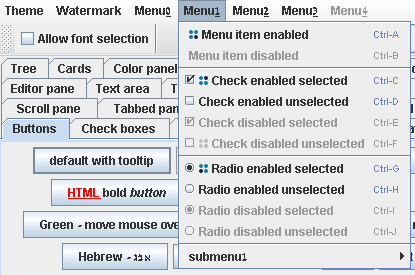
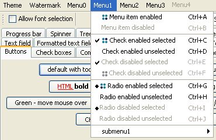
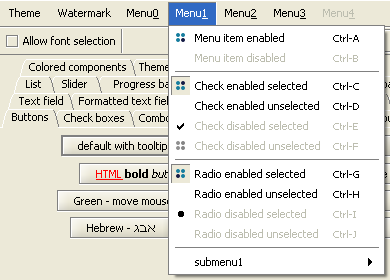
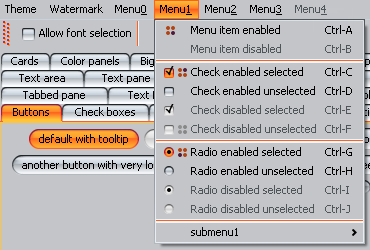
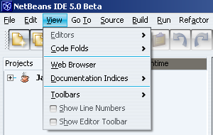
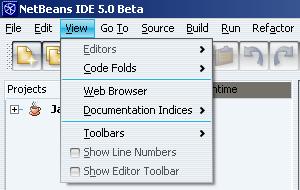

Does the following look familiar (under default Ocean theme in Metal LAF)?

The menu doesn't look good, with jagged items all over the place. The common solution in
this scenario is to use a transparent icon on those menu items that don't have one. There
are a few problems with this approach:
- What happens if you add another menu item with slightly wider icon? You will have to
adjust all other icons accordingly.
- What happens with JCheckBoxMenuItems and JRadioButtonMenuItems? Once you
have those, it's almost impossible to get it done correctly, especially if they have icons
themselves.
- There is no JMenu constructor that gets an icon. You'll have to call setIcon().
- The last, but most certainly the most annoying - why should you even bother to do this?
The answer to the last question lies in the BasicMenuItemUI class that does the
actual layout and rendering - it's looking at one menu item at a time. It's not
even aware that the specific menu item is a part of visual group, so it happily hacks
(and quite ugly) at the corresponding menu item, and the result is far from perfect:

(the above is Windows LAF from JDK).
To the rescue come custom look-and-feels. JGoodies
Looks comes equiped with custom menu item renderer. It keeps track of the maximum
text offset on the menu item parent (JPopupMenu in our case), and once the rendering
should be done, the offset is taken from the parent (client property). The result is much
more satisfying (see this issue
and Karsten's comment below regarding the layout JCheckBoxMenuItems and
JRadioButtonMenuItems with icons - the check marks are drawn underneath the icons):

Substance LAF takes a different approach,
inheriting from BasicMenuItemUI and overriding the function that computes the
text offset. It does the same as JGoodies, but for every menu item, it goes over all
entries in the parent component (JPopupMenu) and computes the maximal text offset.
This approach is more time consuming but also more dynamic. The result is:

This also works on "real" application, such as NetBeans:
Before

After
